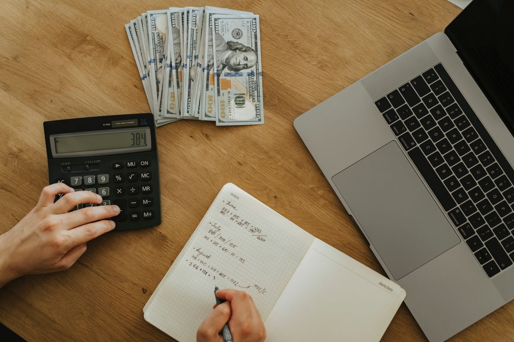
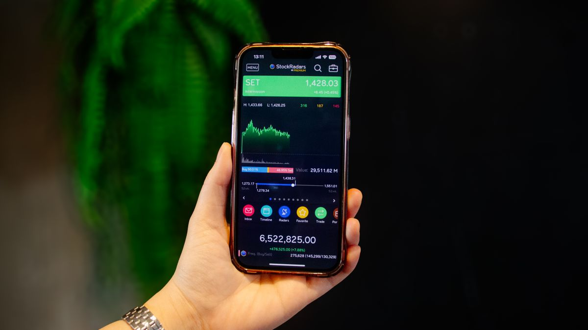

Jumat 23 Oktober 2026 ini pasar saham sedang ramai dibicarakan: IHSG menguat di sesi pertama perdagangan ke level 5.446,74, naik sekitar 1,09 persen dari penutupan sebelumnya. Buat yang belum pernah beli saham sama sekali, momen seperti ini sering memancing rasa penasaran campur waswas: pengin ikut, tapi tidak tahu harus mulai dari mana dan takut salah langkah.
Artikel ini memandu cara mulai investasi saham untuk pemula dari nol sampai transaksi pertama, berdasarkan aturan main yang berlaku per Oktober 2026. Tidak ada rekomendasi beli saham tertentu di sini, hanya langkah teknisnya dan jebakan yang wajib kamu hindari.
Saham itu apa, singkatnya
Membeli saham berarti membeli potongan kecil kepemilikan sebuah perusahaan. Kalau perusahaan itu kinerjanya bagus, harga potonganmu bisa naik dan kamu bisa menjualnya dengan untung (capital gain), atau kamu bisa dapat pembagian laba yang disebut dividen. Sebaliknya kalau kinerjanya buruk, harga bisa turun dan kamu bisa rugi.
Dua hal penting yang harus ditanam dulu: saham bukan cara cepat kaya, dan nilainya bergerak setiap hari. Saham paling cocok dipakai untuk tujuan jangka menengah sampai panjang, dengan uang yang memang siap ditahan dan siap berisiko.
Siapkan tiga hal ini dulu sebelum buka akun
Langkah paling menentukan justru sebelum kamu mendaftar ke mana pun:
- KTP dan rekening bank atas nama sendiri. Pembukaan rekening saham 100 persen digital dan butuh verifikasi identitas (e-KYC). Dokumen dasarnya KTP plus swafoto, dan NPWP kalau kamu punya.
- Dana dingin, bukan dana darurat. Pakai uang yang tidak dipakai untuk kebutuhan pokok, cicilan, atau dana darurat. Prinsipnya sederhana: kalau uangnya tiba-tiba turun nilainya dan kamu panik, berarti itu bukan dana dingin.
- Ekspektasi yang jujur. Harga saham bisa naik dan turun, dan tidak ada orang yang bisa menjamin kamu pasti cuan. Kalau seseorang menjanjikan keuntungan pasti, itu justru tanda bahaya.

Langkah dari nol sampai transaksi pertama
Urutannya seperti ini, dan hampir semuanya bisa dikerjakan dari HP:
- Pilih perusahaan sekuritas yang berizin dan diawasi OJK. Ini syarat mutlak: hanya sekuritas berizin OJK yang dananya terlindungi kerangka hukum Indonesia. Bandingkan juga biaya transaksi, kemudahan aplikasinya, dan kelengkapan fitur risetnya. Beberapa yang populer di kalangan pemula misalnya Ajaib, IPOT, MOST, atau BIONS.
- Buka rekening efek dan RDN secara online. Setelah memilih sekuritas, daftar di aplikasinya, unggah KTP, lakukan selfie verifikasi, isi formulir, dan tanda tangani digital. Sesudah disetujui kamu dapat nomor SID dari KSEI (identitas investormu) dan RDN, yaitu Rekening Dana Nasabah: rekening khusus atas namamu yang menampung dana transaksi.
- Setor dana ke RDN. Transfer dari rekening bank pribadimu ke RDN. Setelah dana masuk, saldonya siap dipakai membeli saham. Beberapa sekuritas mengizinkan setoran awal yang kecil, jadi kamu tidak perlu menunggu punya modal besar untuk latihan.
- Pelajari sahamnya sebelum beli. Cek bidang usaha perusahaannya, laporan keuangannya, dan rekam jejak pembagian dividennya. Untuk pemula, umumnya disarankan mulai dari saham perusahaan besar yang likuid dan rajin dibahas kinerjanya, bukan saham gorengan yang harganya digerakkan rumor.
- Masukkan order beli. Di pasar reguler Bursa Efek Indonesia, 1 lot sama dengan 100 lembar saham. Cari kode sahamnya di aplikasi, pilih Beli, tentukan jumlah lot, lalu pilih tipe order: market order (eksekusi langsung di harga yang tersedia) atau limit order (kamu tentukan harga belinya, order menunggu sampai ada yang cocok). Periksa ulang kode, jumlah lot, dan harga sebelum menekan konfirmasi.
- Pantau portofolio dan tentukan strategi keluar. Sejak awal tetapkan dua angka: target keuntungan yang membuatmu puas menjual, dan batas rugi yang membuatmu berani cut loss. Catat jam bursa: Senin sampai Jumat sesi 1 pukul 09.00 sampai 11.30 WIB, sesi 2 pukul 13.30 sampai 15.00 WIB. Order di luar jam itu menunggu sampai bursa buka.

Empat jebakan yang paling sering menelan pemula
Kebanyakan kerugian pemula bukan karena salah pilih saham, tapi karena salah perilaku. Ini empat yang paling umum:
- FOMO ikut sinyal grup chat. Rekomendasi beli dari grup asing atau influencer tanpa dasar analisis itu perjudian, bukan investasi. Kamu yang menanggung risikonya, bukan si pemberi sinyal.
- Pakai uang panas. Uang kontrakan, uang kuliah, atau dana darurat yang dipaksa masuk saham akan membuatmu panik setiap harga turun, dan keputusan panik hampir selalu rugi.
- Daftar di platform tidak berizin OJK. Iklan investasi dengan janji keuntungan besar lewat aplikasi tak berizin masih banyak beredar. Tanpa izin OJK, danamu tidak punya perlindungan hukum kalau platformnya kabur.
- Beli tanpa exit plan. Masuk tanpa tahu kapan mau jual bikin kamu serakah saat naik dan menolak cut loss saat turun. Tentukan target dan batas rugimu sebelum menekan tombol beli, lalu patuhi.
Intinya
Cara mulai investasi saham untuk pemula itu urutannya jelas: pilih sekuritas berizin OJK, buka rekening efek dan RDN online, setor dana dingin, pelajari sahamnya, lalu beli dengan jumlah lot yang sudah diperhitungkan. Anggap transaksi pertamamu sebagai latihan, bukan sebagai penentu nasib. Mulai kecil, pahami mekanismenya, dan biarkan pengalaman berjalan seiring waktu. Semua angka dan ketentuan di artikel ini mengacu pada kondisi per Oktober 2026; data pasar seperti level IHSG berubah setiap hari bursa.
← Kembali ke Other